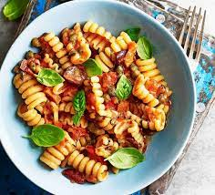

Pasta

Description
What is pasta? Italian pasta (pronounced “PAS-tah”) is a collective name for a category of food made from wheat flour and water, sometimes with egg. The name refers to the resulting dough (pasta also means “dough”) that is rolled out and cut into various shapes. Pasta is cooked in water and served with a sauce.
Ingredients
- Tomato paste
- Parmesan
- Pasta
- Mozzarella